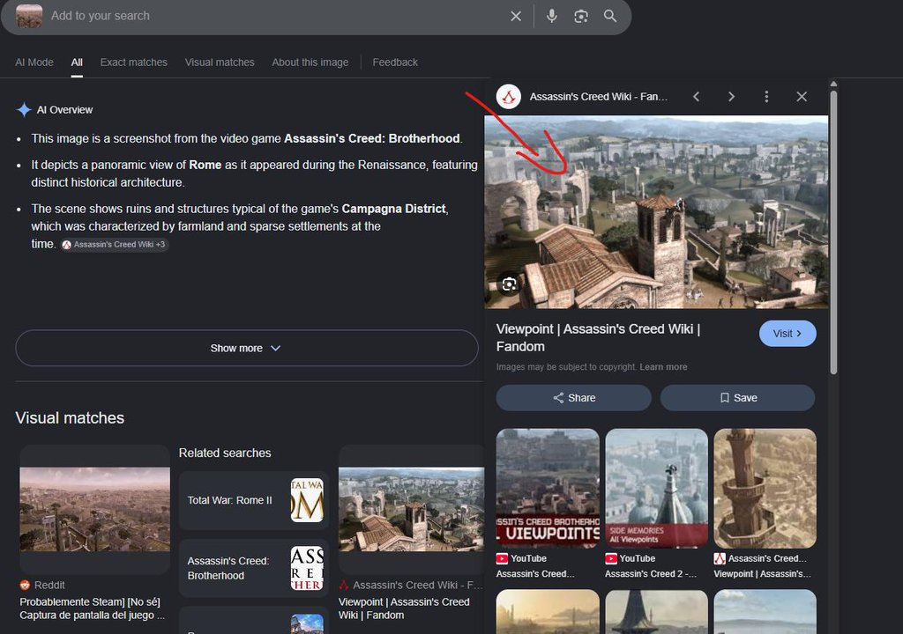
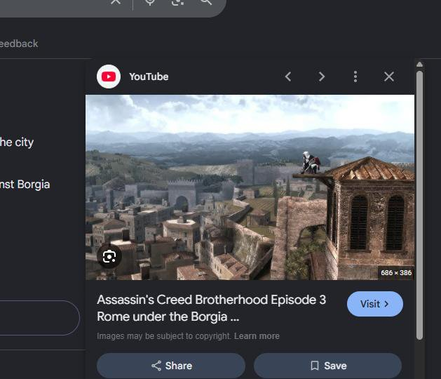
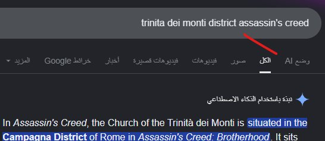
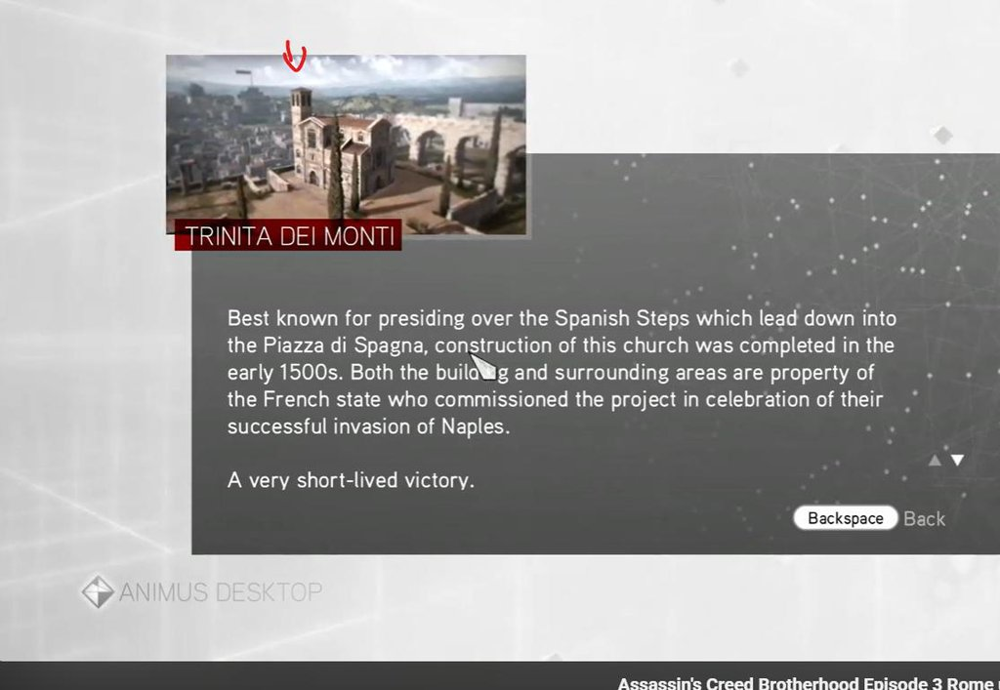

first contact — the picture itself
phase / reconOk so I unzip the archive. One file, MotoRace.png, 1.23 MB. I open it. It's a screenshot from a game. There is no text on the image, no HUD, no minimap, no UI. Just a wide shot of a city built across hills, a hazy warm atmosphere, a few column ruins in the lower-left foreground, and a sprawling background full of stone buildings with terracotta roofs, cypress trees, and distant mountains.
Before I do any image analysis, I check the boring stuff:
No steg, no metadata, no embedded text. The image is just a picture. So whatever solves this is going to come from looking at the picture, not from inspecting the file. Good. That simplifies the toolkit to: eyes, browser, and a good image search.

reverse image search — the first pass
phase / google imagesFirst thing I do: upload MotoRace.png to Google Images. The engine indexes the picture, finds visually similar shots, and gives me a list. The closest match is another photo taken from the same general area as my screenshot. Same warm haze, same column-ruin foreground, same terracotta rooftops, same distant hills. The other results are scenic shots from various Mediterranean cities, not the same location.
So I have a candidate image. I download it, then I upload that candidate as a second pass. The second pass is what does the work.
// what the first pass returned
Visually similar images. The closest one is a different season (clearer sky, sharper contrast) but the same vantage point, the same column ruins, the same hilltop structure in the mid-background. That is the image I take to the second pass.
The other matches are scenic shots from various Mediterranean cities — Florence rooftops, a Roman aqueduct, an Athens acropolis. They look superficially similar but the layout, the foreground ruins, and the silhouette of the hilltop landmark do not line up with my screenshot. Reject.
// why it works
Google's image index matches on a combination of texture, color distribution, and a learned embedding from the picture. A wide-angle panorama with a distinctive foreground and a distinctive mid-background silhouette is easy to match against other shots of the same place. A close-up of a single building is hard.
This screenshot has exactly that shape: a wide panorama, a distinctive foreground, a distinctive background landmark. That is the right input for reverse image search, and that is what makes this challenge solvable.
video match — the second pass pays off
phase / youtubeI take the closest match from the first pass and upload it to Google Images. The engine this time returns a YouTube video whose thumbnail is essentially the same view as my screenshot. The side panel preview shows the video title: Assassin's Creed Brotherhood Episode 3 Rome under the Borgia, with a thumbnail of a hooded figure on a wooden platform looking out over a Renaissance city, a wide river, and mountains in the background.
I open the video and skip through it. Within a few minutes I find a frame that lines up exactly with my screenshot: same vantage point, same hilltop church in the background, same column ruins in the foreground, same valley of red roofs in between. The picture is from a sequence in Assassin's Creed Brotherhood, Episode 3, set in Rome.
So now I know: the city is Rome, and the prominent structure on the hill is Trinita dei Monti, the church that sits at the top of the Spanish Steps. The vantage point is the viewpoint looking down the steps toward the Tiber.

district lookup — getting the right name
phase / google searchNow I need the district. The Spanish Steps and Trinita dei Monti sit on the Pincian Hill, which is the district historically known as Campagna (or Campo Marzio in some sources, but the in-game and tourist-facing name is Campagna). The flag format wants District_Landmark, so the natural answer is Campagna_Trinita_dei_Monti.
To confirm the district name I search Google for trinita dei monti district and the first result is a snippet from the AC Brotherhood wiki that says, in plain text: “situated in the Campagna District of Rome in Assassin's Creed: Brotherhood”. That is the district name. The flag is Campagna_Trinita_dei_Monti.

in-game confirmation — the Animus database
phase / cross-checkFor the final confirmation I open the in-game Animus database inside Assassin's Creed Brotherhood. The database has a codex entry for every landmark, and the entry for Trinita dei Monti is exactly what I expected: a picture of the church with its twin bell towers, the title TRINITA DEI MONTI in a dark red banner, and a paragraph describing the building. The screenshot from the Animus matches the picture I started with.
That closes the loop. The original MotoRace.png was a screenshot from this game, taken from this exact vantage, looking at this exact landmark. The flag is the district + the landmark name, underscore-joined, in the example format from the challenge description.

signal map — the trail end to end
phase / visualizationThe connection map for this solve. It traces the reverse image search trail from the file on disk to the recovered flag, with each node showing which step fed the next. Click any node to get the one-line summary. The four packs (Evidence, Search, City, Flag) are the four stages the picture passes through on its way to becoming a flag.
recovered flag
phase / verifyVerified by the challenge server accepting the flag. No source code to read, no encryption to break, no binary to reverse. The whole solve was a 4-step reverse image search trail. About 10 minutes end to end, most of which was watching the YouTube walking-tour video to find the matching frame.
The flag format OmniCTF{District_Landmark} made the second half easy once the city was identified. The example in the challenge description (San_Giovanni_Cattedrale_di_Santa_Maria_del_Fiore) was the hint: real-world district + real-world landmark name, with underscores between words. For Rome, the district is Campagna and the landmark is Trinita dei Monti.
appendix — full process list
referenceThe complete reverse image search process, summarized in one place. No code, no solver — the picture is the query, the picture is the answer.
- Upload MotoRace.png to Google Images. The engine returns visually similar shots. The closest match is another photo from the same general area. The other matches are scenic Mediterranean cities that look superficially similar but the foreground, the layout, and the hilltop silhouette do not line up. Reject.
- Take the closest match and upload it to Google Images as a second pass. This time the engine finds a YouTube video whose thumbnail is essentially the same view. The video is
Assassin's Creed Brotherhood Episode 3 Rome under the Borgia. The side-panel preview shows the title and the thumbnail of a hooded figure overlooking a Renaissance city. - Open the YouTube video and skip through it. Within a few minutes, a frame lines up with the original screenshot. Same vantage point, same hilltop church, same column ruins in the foreground. The city is Rome. The prominent structure on the hill is Trinita dei Monti.
- Google search for the district name. Query:
trinita dei monti district. The first result is a wiki snippet that says, in plain text: “situated in the Campagna District of Rome in Assassin's Creed: Brotherhood”. The district is Campagna. - Cross-check in the in-game Animus database. The Animus codex has an entry for every landmark, and the entry for Trinita dei Monti matches the picture: a church with twin bell towers on the Pincian Hill, with a paragraph describing the building and its history.
- Build the flag. Flag format is
District_Landmarkwith underscores. District isCampagna. Landmark isTrinita_dei_Monti. Flag isOmniCTF{Campagna_Trinita_dei_Monti}.